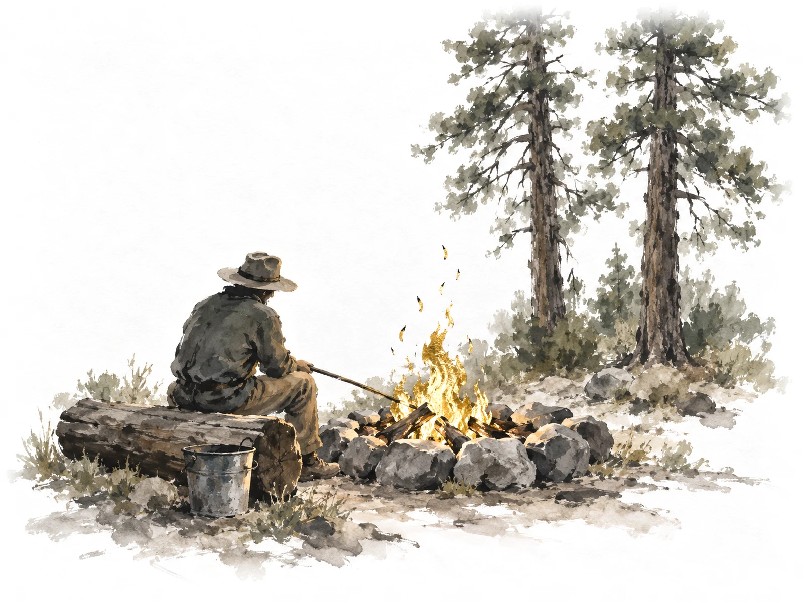
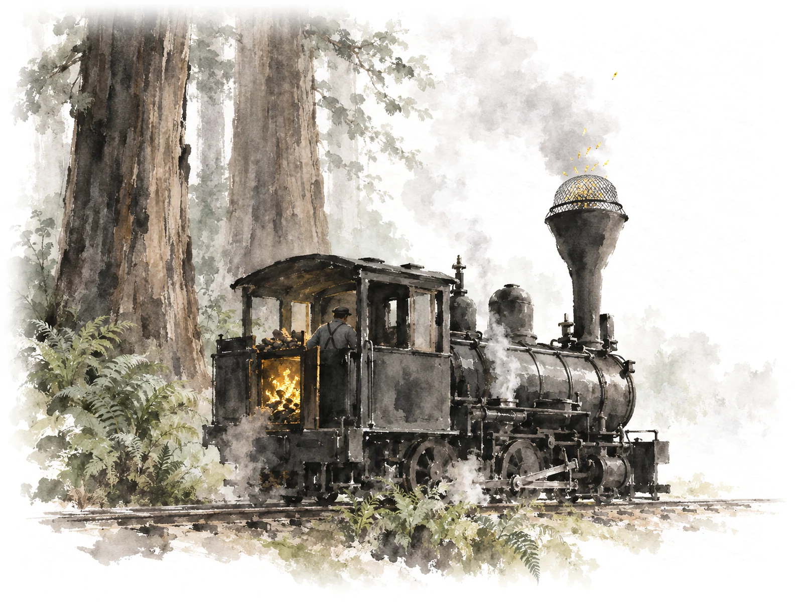
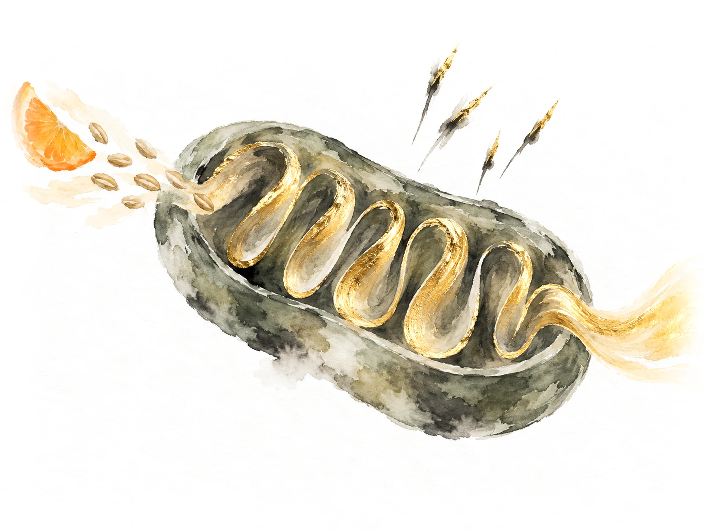

<title>Science Picture Ideas</title>
<meta name="claude:viewport-fit-sides" content="cover">
<link rel="preconnect" href="https://fonts.googleapis.com">
<link rel="preconnect" href="https://fonts.gstatic.com" crossorigin>
<link rel="stylesheet" href="https://fonts.googleapis.com/css2?family=Ysabeau:wght@400;500&family=Instrument+Sans:wght@400;500&display=swap">
<style>
  /* Layout: three options down one column on the site's rice paper. Each is a slice of the real
     section (the Free radicals words beside the sample painting, its caption under it), then a
     short note on what the other two topics would show. One light world, like the site. */
  :root {
    --paper: #f6f3ec;
    --ink: #1c1a16;
    --grey: #5f5a50;
    --hair: #d9d2c2;
    --gold: #8a6a22;
    --title: "Ysabeau", "Iowan Old Style", "Palatino Linotype", Georgia, serif;
    --body: "Instrument Sans", system-ui, -apple-system, "Segoe UI", Roboto, sans-serif;
    color-scheme: light;
  }
  [hidden] { display: none !important; }
  body {
    background: var(--paper) url("img/paper.webp") center top / 900px auto repeat;
    color: var(--ink);
    font: 18px/1.55 var(--body);
  }
  .page {
    max-width: 1180px;
    margin: 0 auto;
    padding-left: max(16px, env(safe-area-inset-left, 0px));
    padding-right: max(16px, env(safe-area-inset-right, 0px));
    padding-block: 36px 80px;
    display: grid;
    gap: 64px;
  }
  h1, h2, h3 { font-family: var(--title); font-weight: 500; line-height: 1.12; text-wrap: balance; margin: 0; }
  h1 { font-size: clamp(2rem, 5.4vw, 3rem); }
  p { margin: 0; }
  .tag { font-size: 0.78rem; letter-spacing: 0.09em; text-transform: uppercase; color: var(--gold); }
  .intro { display: grid; gap: 12px; max-width: 46rem; }
  .intro p { color: var(--grey); }

  .option { display: grid; gap: 24px; border-top: 1px solid var(--hair); padding-top: 32px; }
  .option > header { display: grid; gap: 6px; }
  .option > header h2 { font-size: clamp(1.7rem, 4vw, 2.3rem); }
  .pick { font: 500 0.8rem var(--body); letter-spacing: 0.06em; text-transform: uppercase; color: var(--gold); }

  /* the slice of the section */
  .slice {
    display: grid;
    grid-template-columns: minmax(0, 0.9fr) minmax(0, 1.25fr);
    gap: clamp(24px, 4vw, 56px);
    align-items: center;
  }
  .words { display: grid; gap: 14px; align-content: start; }
  .words h3 { font-size: clamp(1.35rem, 2.3vw, 1.7rem); }
  .words > p { color: var(--grey); }
  .words ul { list-style: none; margin: 0; padding: 0; display: grid; gap: 8px; }
  .words li { display: flex; gap: 12px; }
  .words li::before { content: "\2014"; color: var(--grey); }
  figure { margin: 0; display: grid; gap: 10px; min-width: 0; }
  .stage { position: relative; }
  .stage img { display: block; width: 100%; max-width: 100%; height: auto; mix-blend-mode: multiply; }
  .illus { position: absolute; top: 3%; left: 4%; font-size: 0.82rem; color: var(--grey); }
  .label {
    position: absolute;
    font-size: clamp(0.85rem, 1.5vw, 1rem);
    font-weight: 500;
    white-space: nowrap;
    transform: translate(-50%, -50%);
  }
  figcaption { font-size: 1.02rem; line-height: 1.4; }

  .rest { display: grid; gap: 8px; max-width: 46rem; }
  .rest h3 { font: 500 1rem var(--body); color: var(--grey); }
  .rest ul { margin: 0; padding-left: 1.2em; display: grid; gap: 6px; }
  .note { color: var(--grey); max-width: 46rem; }

  .verdict { display: grid; gap: 14px; border-top: 1px solid var(--hair); padding-top: 32px; max-width: 46rem; }
  .verdict ul { margin: 0; padding-left: 1.2em; display: grid; gap: 8px; }

  @media (max-width: 760px) {
    .slice { grid-template-columns: minmax(0, 1fr); }
    .slice figure { order: -1; }
  }
</style>

<main class="page">
  <header class="intro">
    <span class="tag">Homepage · Make sense of the science · New ideas</span>
    <h1>Three ways to show it</h1>
    <p>One quick sample painting for each idea, all for the same topic, Free radicals, beside its real words. If you pick one, I'll paint the other two topics to match.</p>
  </header>

  <section class="option" aria-labelledby="opt-b">
    <header>
      <span class="pick">My pick</span>
      <h2 id="opt-b">B. A campfire</h2>
    </header>
    <div class="slice">
      <div class="words">
        <h3>What are free radicals—and how do antioxidants help?</h3>
        <p>A simple explanation of free radicals, the damage they can cause, and your cells’ natural defenses.</p>
        <ul>
          <li>Mitochondria are one of the main sources of free radicals</li>
          <li>Your body also makes its own antioxidants</li>
          <li>More antioxidants are not automatically better</li>
        </ul>
      </div>
      <figure>
        <div class="stage">
          
          <span class="illus">Illustrations</span>
        </div>
        <figcaption>Like a campfire: wood makes warmth, and a few sparks fly. The stone ring keeps them in.</figcaption>
      </figure>
    </div>
    <div class="rest">
      <h3>The other two topics</h3>
      <ul>
        <li>Mitochondria: the camper adds wood, and the fire warms them. Fuel in, warmth out.</li>
        <li>Aging cells: the slider shows the same camper at 30, 55 and 80, still tending a good fire.</li>
      </ul>
    </div>
    <p class="note">Why I pick it: it's the lightest and calmest, and the closest to the homepage's ink style. All three lines have a match: the fire makes the sparks, the stone ring is your own defenses, and the bucket of water is "too much". To fix in the real one: the sparks rise above the ring here; they should fall back inside it.</p>
  </section>

  <section class="option" aria-labelledby="opt-a">
    <header>
      <h2 id="opt-a">A. A steam train in the redwoods</h2>
    </header>
    <div class="slice">
      <div class="words">
        <h3>What are free radicals—and how do antioxidants help?</h3>
        <p>A simple explanation of free radicals, the damage they can cause, and your cells’ natural defenses.</p>
        <ul>
          <li>Mitochondria are one of the main sources of free radicals</li>
          <li>Your body also makes its own antioxidants</li>
          <li>More antioxidants are not automatically better</li>
        </ul>
      </div>
      <figure>
        <div class="stage">
          
          <span class="illus">Illustrations</span>
        </div>
        <figcaption>Like a steam engine: fuel makes power, and sparks fly. The screen on top catches most of them.</figcaption>
      </figure>
    </div>
    <div class="rest">
      <h3>The other two topics</h3>
      <ul>
        <li>Mitochondria: wood goes into the firebox, and the train moves. Fuel in, power out.</li>
        <li>Aging cells: the slider shows the same engine new, well worn, and old but still running.</li>
      </ul>
    </div>
    <p class="note">The good: it tells the clearest story, and the screen on the smokestack is a real thing on California's old forest trains. The problem: it's the heaviest picture, a big black engine that looks more drawn than painted, and busier than the rest of the homepage.</p>
  </section>

  <section class="option" aria-labelledby="opt-c">
    <header>
      <h2 id="opt-c">C. The real thing, painted clearly</h2>
    </header>
    <div class="slice">
      <div class="words">
        <h3>What are free radicals—and how do antioxidants help?</h3>
        <p>A simple explanation of free radicals, the damage they can cause, and your cells’ natural defenses.</p>
        <ul>
          <li>Mitochondria are one of the main sources of free radicals</li>
          <li>Your body also makes its own antioxidants</li>
          <li>More antioxidants are not automatically better</li>
        </ul>
      </div>
      <figure>
        <div class="stage">
          
          <span class="label" style="left: 15%; top: 47%">food in</span>
          <span class="label" style="left: 86%; top: 87%">energy out</span>
          <span class="label" style="left: 43%; top: 11%">sparks: free radicals</span>
        </div>
        <figcaption>Inside one of your cells' power plants: food goes in, energy comes out, and a few sparks fly off.</figcaption>
      </figure>
    </div>
    <div class="rest">
      <h3>The other two topics</h3>
      <ul>
        <li>Mitochondria: food in, energy out, no sparks.</li>
        <li>Aging cells: three power plants side by side, young to old, the gold fading.</li>
      </ul>
    </div>
    <p class="note">The good: it's the most direct; the sparks come right off the power plant, as the first line says. The problems: it can't show "your own defenses" or "too much", and it's the same kind of picture as the big power plant in "Tiny power plants." just above, the repeat you cut on Monday.</p>
  </section>

  <section class="verdict" aria-label="My honest take">
    <span class="tag">My honest take</span>
    <ul>
      <li>These are quick samples, one try each. The one you pick gets polished, then painted for the other two topics.</li>
      <li>A and B each need the one line under the picture ("Like a campfire…"). Without it, they'd be the hummingbird problem again.</li>
      <li>In all three, the gold is the energy: the fire, the firebox, the power plant's folds.</li>
    </ul>
  </section>
</main>
